Uncover extreme terrestrial environments that simulate potential permanent Moon base landing zones and Martian terrains. TerraTwin connects Earth's geological twins to future deep space mission architecture, astronaut EVA training, and robotic validation.

Planetary analogues are locations on Earth that share geological, geochemical, or extreme environmental characteristics with other celestial bodies. Before venturing millions of kilometers into space, scientists and space agencies test equipment, rovers, and human crews in these extreme terrestrial laboratories.
Terrestrial impact craters (like Haughton) and basaltic shield volcanoes (like Mauna Loa and Askja) duplicate lunar mare basalts, shatter cones, and subterranean lava tubes that could shelter lunar bases.
From the hyper-arid soils of Chile's Atacama Desert to the sub-zero desiccated valleys of Antarctica, these locations reproduce the moisture-free, high-UV, perchlorate-rich environments of Mars.
Testing deep-core sample extraction drills, Raman spectrometers, and autonomous navigation algorithms over loose cinder and jagged basalt prevents catastrophic failure millions of miles from Earth.
Simulated habitats (such as HI-SEAS and FMARS) evaluate crew psychological endurance, pressurized spacesuit mobility, and communication delays to model daily operational rhythms on the Moon and Mars.
Explore terrestrial analogue sites across all seven continents. Filter by planetary target (Moon, Mars, or dual-analogue), search by geological features, and inspect high-fidelity telemetry markers on the interactive world map.
Execute side-by-side environmental, geological, and morphological comparisons between Earth analogues and target planetary destinations. Evaluate terrain similarity indices, assess operational gaps, and analyze mission utility.
Composite score evaluated across terrain morphology, regolith chemistry, thermal extremes, and hydrological absence.
| Comparison Parameter | Terrestrial Analogue Site | Planetary Target (Moon / Mars) |
|---|---|---|
| 1. Terrain Type | Loading... | Loading... |
| 2. Geological Characteristics | Loading... | Loading... |
| 3. Temperature Conditions | Loading... | Loading... |
| 4. Elevation & Topography | Loading... | Loading... |
| 5. Water & Ice Occurrence | Loading... | Loading... |
| 6. Environmental Conditions | Loading... | Loading... |
Loading scientific utility analysis...
How TerraTwin bridges terrestrial Earth observation data with planetary mission engineering.
Sending payloads to the Moon or Mars costs millions of dollars per kilogram, with zero margin for operational error. Terrestrial analogues provide accessible, cost-effective testbeds to validate mechanical durability, test biosignature detection thresholds, refine drilling architectures, and train astronaut crews under realistic operational stress before flight systems are finalized.
Our framework assesses candidate sites across six standardized vectors: terrain morphology, bedrock geochemistry, temperature profile, elevation/topography, hydrological history, and ambient environmental stress. Similarity metrics evaluate both mechanical correspondence (rover wheel traction and drill torque) and scientific correspondence (spectroscopic signatures and mineral preservation).
No terrestrial environment is a 100% replica of the Moon or Mars. Scientists must account for these non-negotiable physical discrepancies during mission planning:
Earth's 1.0 g gravity alters rover wheel traction, projectile dust trajectories, and astronaut muscle mechanics compared to the Moon (0.16 g) and Mars (0.38 g).
Earth's dense nitrogen-oxygen atmosphere produces convective heat transfer and wind drag, whereas the Moon is a hard vacuum and Mars possesses an ultra-thin 6 mbar CO₂ blanket.
Earth's geomagnetic shield and ozone layer protect surface life from lethal solar particle events (SPE) and galactic cosmic rays (GCR) that continuously bombard Moon and Mars surfaces.
Terrestrial sands are smoothed by water and air. Lunar and Martian regolith particles are unweathered, razor-sharp, electrostatically charged, and contain toxic perchlorates.
TerraTwin references public datasets, satellite imagery, and analogue expedition documentation published by the following scientific institutions: